前言
Kafka为使用者提供了客户端，负责向Kafka中写入消息，由KafkaProducer实现。KafkaProducer为了提高系统的吞吐量，它会先将消息缓存起来，然后以批次为单位的发送。具体原理如下：

KafkaProducer计算出消息发往哪个分区，然后放入RecordAccumulator缓存队列里。
RecordAccumulator会尽量将同个分区的多个消息压缩成一个 batch，以ProducerBatch的格式存储起来。
Sender会从RecordAccumulator拉取消息 batch，因为有些分区是存储在同一个 broker，所以它会将发往相同 broker 的消息 batch，合并成一个ClientRequest。如图中所示，tp 0 和 tp1 是是存储到同一个分区的，所以这两个分区的消息 batch 会合并成一个请求。
NetworkClient将生成的网络请求，通过 select 方式发送给服务端。
消息生成者 KafkaProducer
KafkaProducer提供了下面两种发送接口，
|
|
这两个接口返回的都是Future类型，说明发送是异步的。如果我们需要等待消息请求被服务端处理完成的结果，需要调用Future.get方法获取。不过这种方法会造成一段时间的阻塞。如果我们不在乎发送的结果，那么可以直接忽略掉，不过这点不建议在生产环境使用。
如果我们既不想阻塞，影响了消息的发送速度，同样也想处理发送结果，那么建议使用第二个接口，传递回调函数。这里需要提醒下，回调函数是由另外一个线程（Sender 线程）执行的。
KafkaProducer 在发送消息之前，会先去获取集群的信息，弄清楚要发送的 topic 有哪些分区，这些分区在集群中是如何分布的。在获取完分区信息之后，会将消息序列化，并且通过分区器来确认发往哪个分区。
分区器支持自定义，只需要实现Partitioner接口。不过 kafka 也也提供了三种分区器
| 分区器 | 注释 |
|---|---|
| DefaultPartitioner | 对于非空值进行hash分区，对于空值采用UniformStickyPartitioner分区 |
| RoundRobinPartitioner | 轮询 |
| UniformStickyPartitioner | 随机选取一个分区，当此分区生成了一个 batch 后，才会随机选取别的分区 |
这三个分区器适用于不同的场景，
DefaultPartitioner适合于需要将相同key的数据，都保存到同一个分区，但是我们无法控制key的分区是否均匀。RoundRobinPartitioner则没有这个需求，它使得数据在分区的分布是非常平均的，而且计算分区的效率也非常高。UniformStickyPartitioner更适合低延迟的场景，因为RecordAccumulator会将消息压缩成一个 batch，它会等待一段时间使得该batch 包含足够多的消息，如果消息满了之后，则会立即发送
消息缓冲区 RecordAccumulator
添加消息
RecordAccumulator作为消息缓冲区，它为每个topic partition，生成了一个ProducerBatch的队列。ProducerBatch表示消息 batch，它有字节大小的限制。当它所包含的消息总长度，超过了阈值，就会新建一个ProducerBatch。这个阈值由batch.size配置项指定，默认为16 KB。当提高这个值时，单次请求可以包含更多的消息，不过也会造成 batch 填满的时间变长，消息发送的延迟增加。
提取消息
Sender会从RecordAccumulator中提取消息 batch，过程如下
- 查找哪些可以发送消息的 broker
- 查找这些 broker 包含了哪些分区
- 从队列中提取这些分区对应的消息 batch
那么如何判断哪些节点可以发送消息呢，首先这个节点的连接必须已经创建就绪了。然后依次遍历每个分区对应的ProducerBatch队列的头部元素。只要该ProducerBatch满足下面一种，就会认为需要发送。
- 该分区对应的队列长度大于1，那么需要发送。
- 消息发送失败后，kafka 会自动重试，不过需要等待一段时间。该
ProducerBatch重试过了这段时间，那么就需要发送。这段等待时间由retry.backoff.ms配置项指定，默认为100ms。 - 该
ProducerBatch在队列的时间超过了阈值，就需要发送。阈值由linger.ms指定，不过默认为0，表示没有延迟。 - 该batch已经填充了足够多的数据，那么需要发送。阈值由
batch.size配置项指定。 - 当内存池的空闲空间不足时，那么需要发送。因为消息占用内存，所以需要快速发送。当消息发送完成时，就会释放空间。
在获取到哪些 broker 需要发送后，它还会尽量将同个 broker 其他分区的消息 batch，合并到同一个请求中。合并的原则是一个请求中，同个分区只能包含一个消息 batch。
发送线程 Sender
Sender实现了Runnable接口，它运行在一个单独的线程里。它会一直从RecordAccumulator获取消息，并且通过NetworkClient发送消息。Sender首先在选择完消息 batch 后，会将这些 batch 按照 broker 进行合并成一个请求。
|
|
注意到上面的回调函数，它会处理响应。它会解析请求，然后执行每个batch的回调函数。而每个batch会为每个它的每条消息，生成响应，并且执行每条消息的回调。
|
|
错误处理
消息重试
当出现一些错误时，比如网络断开，leader重新选举等可重试解决的错误时，kafka 会进行自动重试。下面代码展示了可以重试的场景
|
|
最多重试次数由retries配置项指定，默认为 2147483647。
消息超时
当消息从创建的那刻起，可能经过了重试，仍然还没有得到服务端的响应，如果时间差超过了阈值，那么 kafka producer 就直接认为该消息超时了，会执行它的失败回调函数。阈值由delivery.timeout.ms指定，默认为2分钟。
Acks 选项
这里再额外提下 acks 选项，它有三个值：
- 值为 0，表示只要请求发送出去了，就认为该消息成功了
- 值为 1，表示请求如果被 leader 处理了，就认为该消息成功了
- 值为 2，表示氢气不仅被 leader 处理，还要被 follower 同步完成，才认为该消息成功了
这里需要考虑一下异步的场景，如果 acks 为 0，且发送为异步的情况。那么当数据仅仅完成写入到了 socket buffer 后，就会认为成功了，此时就会执行回调函数。